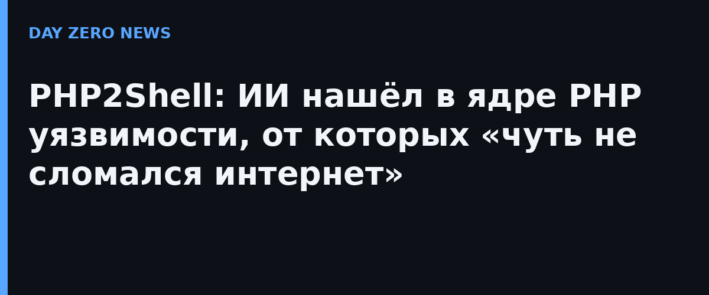

Команда Wiz Research объявила об открытии PHP2Shell — цепочке критических уязвимостей в самом ядре PHP, а не в надстроенных над ним сайтах. Речь о CVE-2026-109618 (удалённое выполнение кода через повреждение памяти при нехватке OOM-памяти) и CVE-2026-109619 (утечка содержимого памяти процесса — туда попадают пароли, токены и API-ключи чужих запросов). Обе оценке CVSS v4.0 — 9.2. Поражены все версии PHP последнего десятилетия, начиная с 5.4, а PHP — это около 70% веба: WordPress, Joomla, MediaWiki с «Википедией» внутри.
Wiz прямо пишет: сами ошибки жили в коде десятилетиями, но демонстративно проэксплуатировать их человек практически не мог — цепочка шагов слишком сложна. Frontier-модели ИИ сократили разработку и адаптацию эксплойта под разные приложения до часов. Wiz называет это поворотной точкой для «эры ИИ» после Heartbleed и Log4Shell: сложность кода перестаёт быть защитой, потому что машиной её вскрывать стало недорого. В открытии и координации участвовали команды OpenAI и исследовательская группа Calif; CISA 21 октября выпустила отдельное предупреждение с призывом патчить немедленно.
Выпуски PHP 8.5.12, 8.4.27, 8.3.36 и 8.2.35 (плюс патчи для снятых с поддержки 7.4/8.0/8.1) закрыли обе дыры 21 октября. 23 октября PHP-проект предупредил ещё об одном, куда более экзотическом векторе CVE-2026-115560: сработать он может только при редком сочетании настроек (session.serialize_handler plus переключение через ini_set), по умолчанию не работает; как временная защита — параметр session.upload_progress.enabled=0. Cloudflare, Fastly, Google, Microsoft и Vercel заранее выпустили экранные правила для тех, кто не может обновиться сразу.
Практика простая: обновить PHP до закрытых версий — единственная полная защита; при задержке с обновлением включить WAF-правила от хостера или CDN и поставить session.upload_progress.enabled=0; после обновления проверить сервер на признаки компрометации (подозрительные процессы, свежие cron-задачи, изменившиеся файлы) — утечка памяти предшествовала патчу месяцами, и никто не знает, кто ещё нашёл дыру первым. Российским владельцам сайтов стоит помнить: рекомендации ФСТЭК по оперативному закрытию опасных уязвимостей в значимых объектах информинфраструктуры никуда не девались, а PHP — самая массовая платформа в российском веб-хостинге.
PHP2Shell — первый громкий случай, когда ИИ стал соавтором находки уровня «сердце веба». Те же модели, что помогают защитникам, сокращают и работу наступающим: NBC уже окрестил это «головокружительной гонкой» между обороняющимися и атакующими. Ответ индустрии — не запретить модели, а перестроить процесс: координированное раскрытие, отраслевые экраны и патчи за считанные дни стали нормой именно потому, что на поиск уязвимости теперь уходят часы, а не годы.